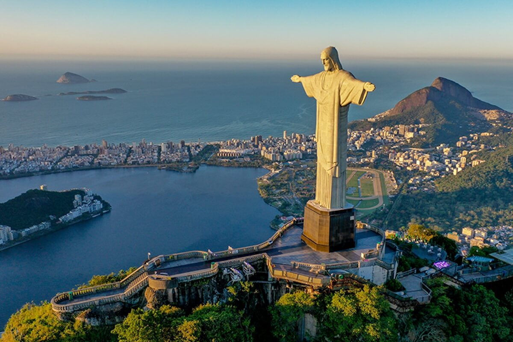
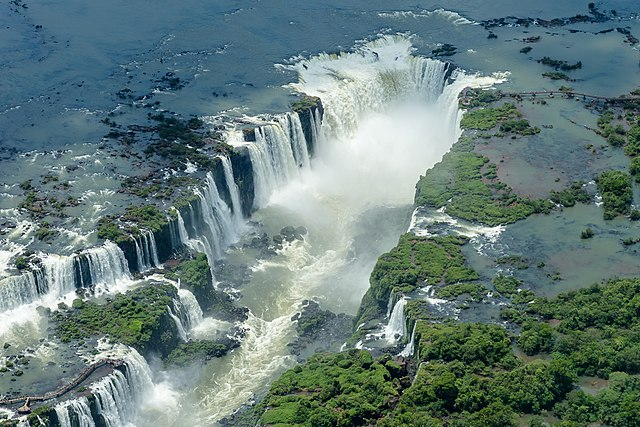
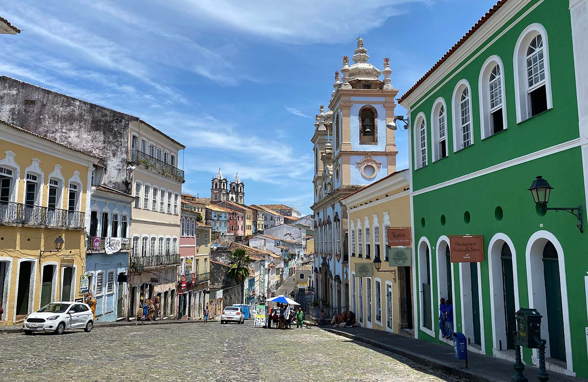
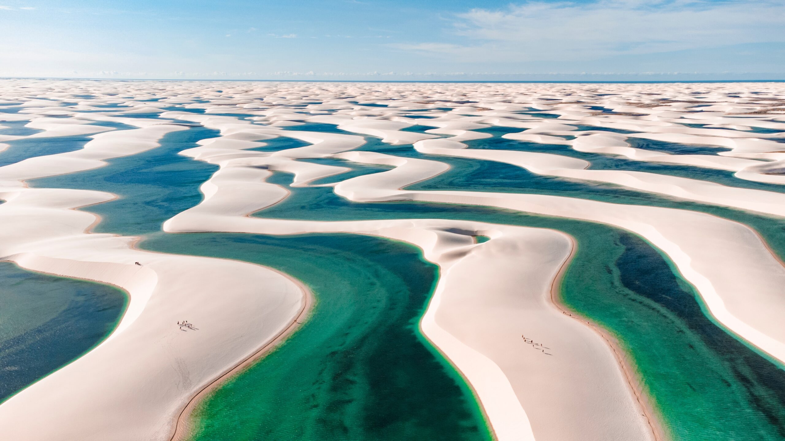
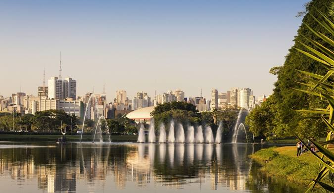
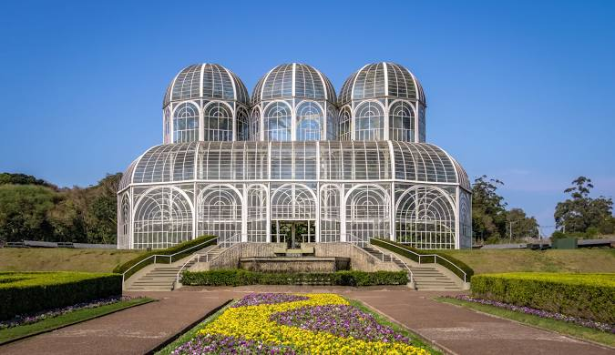
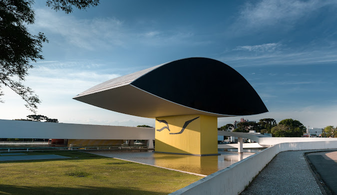
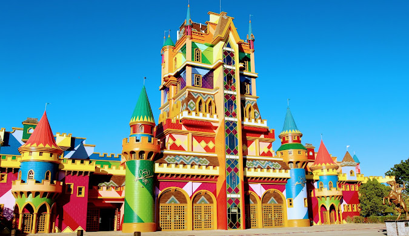
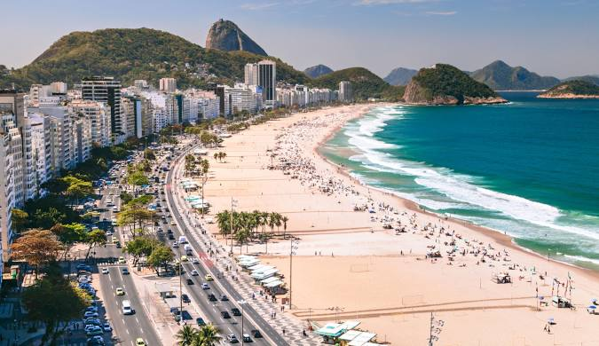
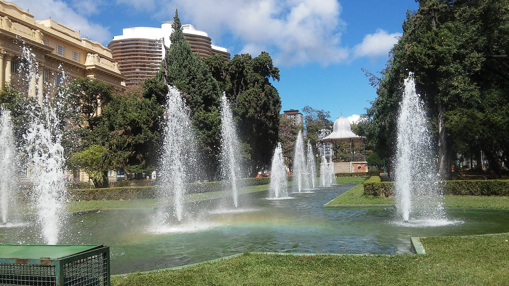

Cristo Redentor (Rio de Janeiro/RJ)
Cristo Redentor é uma estátua que retrata Jesus Cristo localizada no topo do morro do Corcovado, a 709 metros acima do nível do mar, dentro do Parque Nacional da Tijuca. Tem vista para parte considerável da cidade brasileira do Rio de Janeiro, sendo a frente da estátua voltada para a Baía de Guanabara e as costas para a Floresta da Tijuca. Feito de concreto armado e pedra-sabão, tem trinta metros de altura (uma das maiores estátuas do mundo), sem contar os oito metros do pedestal, sendo a mais alta estátua do mundo no estilo Art Déco. Seus braços se esticam por 28 metros de largura e a estrutura pesa 1145 toneladas.
Cataratas do Iguaçu (Foz do Iguaçu/PR)
Cataratas do Iguaçu (em castelhano: Cataratas del Iguazú) é um conjunto de cerca de 275 quedas de água no rio Iguaçu (na Bacia hidrográfica do rio Paraná), localizada entre o Parque Nacional do Iguaçu, Paraná, no Brasil, e o Parque Nacional Iguazú em Misiones, na Argentina, na fronteira entre os dois países. A área total de ambos os parques nacionais corresponde a 250 mil hectares de floresta subtropical e é considerada Patrimônio Natural da Humanidade.
Pelourinho (Salvador/BA)
O Pelourinho, localizado no Centro Histórico de Salvador, Bahia, é uma das imagens e cartões-postais mais conhecidos, divulgados e visitados da capital baiana. Possuindo um acervo colonial urbano e arquitetônico de grande importância cultural, recebeu o título de Patrimônio Mundial da Humanidade pela UNESCO, em 1985. Com mais de quatro séculos de história, a região já abrigou as mais diversas atividades, funções e dinâmicas, e sua trajetória se imbrica à da própria cidade. Atualmente, é um dos principais pontos turísticos soteropolitanos e, além de seu próprio acervo colonial, concentra uma série de equipamentos do setor como hotéis, restaurantes e museus.
Lençóis Maranhenses (Maranhão)
O Parque Nacional dos Lençóis Maranhenses é uma unidade de conservação brasileira de proteção integral à natureza localizada na região nordeste do estado do Maranhão. O território do parque, com uma área de 156 584 ha, está distribuído pelos municípios de Barreirinhas, Primeira Cruz e Santo Amaro do Maranhão. O parque foi criado com a finalidade precípua de "proteger a flora, a fauna e as belezas naturais, existentes no local."
Parque Ibirapuera (São Paulo/SP)
Inaugurado em 1954 com uma área de 158 hectares (390 acres), entre as avenidas Pedro Álvares Cabral, República do Líbano e IV Centenário, o Parque Ibirapuera é um parque tombado e patrimônio histórico de São Paulo. O Parque Ibirapuera é um parque urbano localizado na cidade de São Paulo, Brasil. Em 2017, foi o parque mais visitado da América Latina, com aproximadamente 14 milhões de visitas, além de ser um dos locais mais fotografados do mundo.
Jardim Botânico (Curitiba/PR)
O Jardim Botânico é um dos maiores cartões postais de Curitiba e o ponto turístico mais visitado da cidade. Sua principal atração, a estufa de 458 m2, abriga exemplares vegetais naturais e ornamentais da flora da Mata Atlântica, que cobre a Serra do Mar e a planície litorânea do Paraná. A construção de ferro e 3.800 peças de vidro, em espaço aberto, impressiona as levas anuais de turistas, desde a sua chegada pelos portões principais, da Rua Engº Ostoja Reguski.
Museu Oscar Niemeyer (Curitiba/PR)
O Museu Oscar Niemeyer (MON), também conhecido como Museu do Olho, é um museu de arte localizado na cidade de Curitiba, capital do estado do Paraná, no Brasil. A instituição tem como foco as artes visuais, a arquitetura e o design. Atualmente representa uma instituição cultural, com projeção nacional e internacional, vinculada ao governo estadual do Paraná. É conhecido localmente como "Museu do Olho", devido ao design de seu edifício e como "MON", abreviatura para Museu Oscar Niemeyer.
Beto Carrero World (Penha/SC)
Beto Carrero World é um parque temático localizado no litoral norte do estado de Santa Catarina, Brasil. Inaugurado no dia 28 de dezembro de 1991, pelo seu idealizador João Batista Sérgio Murad, artisticamente conhecido como Beto Carrero, o parque está implantado em uma propriedade com 14 quilômetros quadrados junto ao Kartódromo Internacional Beto Carrero e o Instituto Beto Carrero, havendo bastante espaço para expansões e novos empreendimentos.
Praia de Copacabana (Rio de Janeiro/RJ)
A Praia de Copacabana é uma praia localizada no bairro de Copacabana, na Zona Sul da cidade do Rio de Janeiro, no Brasil. É considerada uma das praias mais famosas do mundo. Limitada pela Avenida Atlântica, Copacabana é sede de eventos de grande porte, como campeonatos mundiais de futebol de areia, campeonatos mundiais de vôlei, shows, dentre outros eventos. O reveillon de Copacabana reúne grande público e conta com ampla queima de fogos de artifício, motivo porque é considerado um dos maiores do mundo. Em razão da projeção internacional como cartão-postal e destino turístico, recebeu, no decorrer dos anos, a alcunha de "princesinha do mar".
Praça da Liberdade (Belo Horizonte/MG)
O complexo paisagistico e arquitetônico da Praça da Liberdade é uma síntese dos estilos que marcam a história de Belo Horizonte, e fica na região da Savassi, no encontro de quatro grandes avenidas: Bias Fortes, Brasil, Cristóvão Colombo e João Pinheiro. A construção da praça foi iniciada na época da fundação da nova capital mineira (1895-1897). Situada no ponto mais alto da área inicial da cidade (circunscrita à Avenida do Contorno) a praça foi feita para abrigar a sede do poder mineiro, os prédios do Palácio do Governo e das primeiras Secretarias de Estado obedecem a tendência da época - estilo eclético com elementos neoclássicos. Ao longo dos anos, o complexo foi recebendo construções de diferentes estilos arquitetônicos.